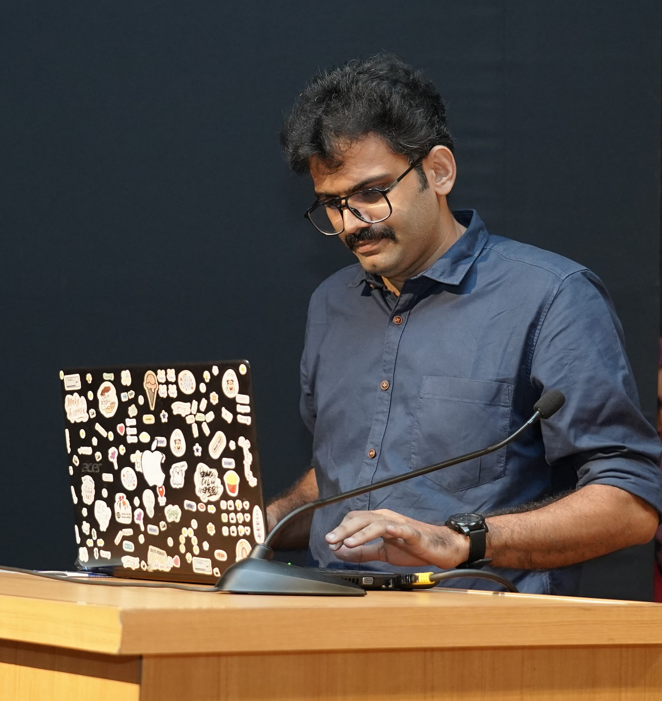

Heterogeneous Catalysis. Photocatalysis. Sustainable Aviation Fuel. Industrial Decarbonization. Real Zero Emission. Green Hydrogen. Environmental and Energy Systems. Carbon Capture, Utilization and Storage (CCUS). Chemical Education. Academic Digital Services that Communicate Research at the Level It Deserves.

PhD from School of Environmental Studies, Cochin University of Science and Technology with doctoral research conducted at the National Centre for Catalysis Research, IIT Madras, under Prof. B. Viswanathan. Thesis: Activation of Carbon Dioxide and Subsequent Reduction to Value-Added Chemicals and Fuels on Graphitic Carbon Nitride Surfaces.
Research Associate with Prof. B. Viswanathan at the National Centre for Catalysis Research, IIT Madras, working on industrial decarbonisation and CO2-to-sustainable aviation fuel (SAF) process concepts via reverse water–gas shift and Fischer–Tropsch synthesis.
Alongside active research, I provide Academic Digital Services: domain-informed academic websites, publication-grade LaTeX typesetting, conference and orientation design, policy briefs, and science communication for researchers, labs, and institutions who need their work communicated at the level it deserves.
Co-Founder and Executive Editor of the Catalysis Education Newsletter, established together with Prof. B. Viswanathan as a non-profit open knowledge platform preserving the NCCR legacy and advancing contemporary catalysis education.
"Every website is designed from the inside out. The starting point is never a template or a colour palette. It is the researcher's field, because the designer must understand the domain to build something worthy of it."
Domain expertise in catalysis, energy systems, and environmental science means every deliverable is built with full comprehension of what is being communicated. No translation layer, no generic templates.
Academia · Government · NGOs · Decarbonisation Startups
Every project begins with the researcher's field, not with a template. The typography, structure, visual language, and content hierarchy all emerge from the domain itself. The design carries the intellectual character of the research it represents.
This is possible because the designer understands the domain at the level a researcher in it would.
All projects quoted individually after a scoping discussion.
Research and policy documents require more than good layout. They require someone who can read the content, understand the argument, and structure the document so the right things carry weight.
Domain expertise in energy, catalysis, and environmental science means this work is done with full comprehension of what is being communicated.
Editable source files included as standard.
Every event design begins with two questions: what is the theme, and who is the audience. In any academic gathering, the primary audience is graduate students and postdoctoral researchers. The programme is built around what they need to learn.
Each invited lecture is structured in two parts: the foundational paradigm of the topic first, then current advances. The default where speakers present group results to an audience without context is explicitly avoided.
Rates scale with days, session count, and deliverables.
Translating complex research into accessible formats for general audiences, school and public outreach, and institutional communication. Explainer articles, illustrated guides, outreach comics, public-facing research summaries.
Quoted per projectStructured learning materials, course content, and explainer modules for catalysis, energy systems, and environmental science. Designed with the foundational-first philosophy: paradigm before advances, context before detail.
Quoted per projectResearch brochures, conference posters, presentation slide decks, newsletters, lab identity materials, and infographics for policy and research. All optimised for digital distribution by default.
Quoted per scopeWebsites and print materials designed for academic and research contexts — built with domain knowledge, not templates.
Full conference website for the 20th edition of India's flagship catalysis orientation programme, hosted by the CO2 Research and Green Technologies Centre, VIT Vellore. Designed with the intellectual character of catalysis education, emphasizing foundational structure, clear participant information, registration workflow, and downloadable brochure integration. Built on GitHub Pages.
View Live Site ↗Academic research portfolio for a postdoctoral fellow at Aix-Marseille University, France. Domain-informed visual identity drawn from synthetic organic chemistry and asymmetric catalysis. Full research narrative including publications, patents, academic journey, conferences, and scientific philosophy. Built on GitHub Pages with synthesised molecule SVG visuals.
View Live Site ↗Designed the official programme brochure for the Orientation Programme in Catalysis. Covers programme overview, schedule, resource persons, eligibility, and logistical information. Produced for both print distribution and digital download, integrated directly into the conference website.
View Brochure PDF ↗Founded and managed the Catalysis Education Newsletter, an alumni-driven open-access platform preserving the legacy of the National Centre for Catalysis Research (NCCR), IIT Madras. Responsible for end-to-end newsletter production including issue design on Substack, content curation and strategy, editorial coordination with Prof. B. Viswanathan, and subscriber communication. Serves researchers, PhD students, and catalysis educators worldwide.
Read the Newsletter ↗Founder, Executive Editor & Content Manager (non-profit). Dedicated to preserving the NCCR legacy and disseminating contemporary catalysis knowledge. Substack-based, open-access.
catalysiseducation.substack.com ↗Personal newsletter on conversations in environmental science and engineering. Reflections, analysis, and commentary at the intersection of research, policy, and practice.
hariprasadnarayanan.substack.com ↗Sustainability education comic for school students. Produced for IIT Madras School of Sustainability in partnership with Clean Tamil Nadu Company Limited (CTCL), 2026.
View Comic ↗Copy Editor for three Elsevier volumes: Materials for Supercapacitor Applications (2020), Carbon Dioxide to Chemicals and Fuels (2018), Energy Sources: Fundamentals of Chemical Conversion (2016).
Elsevier · 2016–2020Freelance PhD Data Partner (Chemistry) at TELUS Digital, designing domain-specific chemistry problems for AI training datasets. Malayalam language AI annotation specialist at Aligner.
TELUS Digital · AlignerLed pioneering research on g-C3N4 materials for photocatalytic CO2 reduction and water splitting. Investigated 18 distinct g-C3N4 systems via one-pot, ionothermal, and supramolecular-assisted eutectic synthesis. Developed novel metrics including normalized surface concentration (NSC%) and light absorption efficiency per unit surface area (DP/SA). Introduced ML-assisted structure-property-performance correlation frameworks.
Developed comprehensive process concepts for CO2-to-SAF conversion via reverse water-gas shift and Fischer-Tropsch synthesis. Contributed to international research proposal consortia involving academic and industrial partners across Europe.
Interdisciplinary research in industrial decarbonisation, green hydrogen systems, and sustainable energy transitions. Exploring techno-economic pathways for Net Zero in hard-to-abate sectors. Developing AI-assisted educational frameworks for catalysis and energy systems learning.
Investigated solar-driven photocatalysis for industrial wastewater treatment. Studied advanced oxidation processes using semiconductor photocatalysts under natural sunlight. Explored TiO₂ and related systems for Rhodamine B degradation kinetics.
Photocatalytic Nanomaterials for Environmental Applications, Vol. 27, pp. 175–210
Solar Hydrogen Production: Processes, Systems and Technologies, pp. 419–486
Grid Energy Batteries: From Fundamentals to Frontier Technologies
NCCR Internal Bulletin — Monograph
Fluent in all three
Qualified the National Eligibility Test (NET) for Lectureship in Environmental Sciences, 2012 · University Grants Commission (UGC), Government of India.
For research collaborations, academic digital services engagements, editorial work, or science communication, begin with an email. A short exchange will clarify the project, scope, and timeline.
There are no tiers. Every project is taken to completion at the highest standard the scope allows. The quality does not change with the budget.